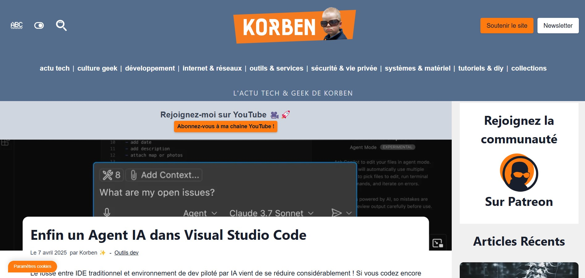
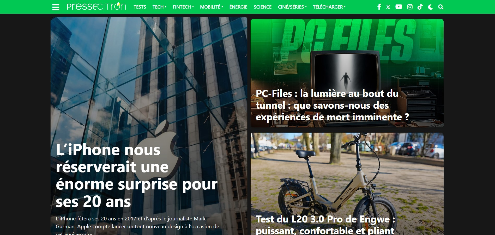
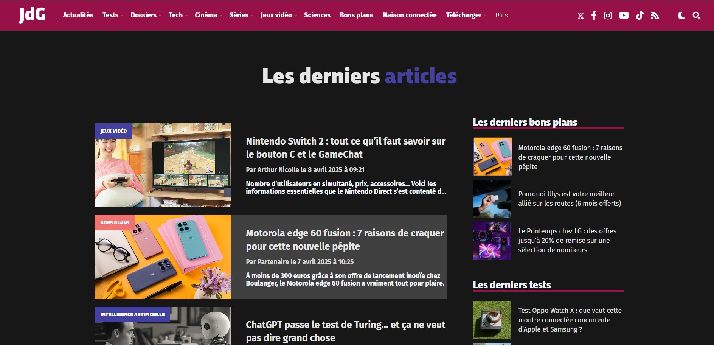

Mes Flux RSS

Pour une méthode PUSH, j'utilise l'application Inoreader sur Android avec les flux RSS ci-dessous :
Mes sites utiles
Pour une méthode PULL, je visite fréquement les sites ci-dessous :

Le Site de Korben
Le site de Korben, Korben.info, est un blog indépendant dédié à l'informatique, la culture geek, et les astuces techniques, conçu pour les passionnés d'informatique

Presse-Citron
Presse-Citron est un site web français spécialisé dans l'actualité technologique, offrant des tests de produits, des astuces numériques et des analyses sur le monde du high-tech

Le Journal du Geek
Le Journal du Geek est un webzine français qui couvre l'actualité high-tech, la culture geek, les jeux vidéo, la pop culture et les sciences, réunissant une grande communauté de passionnés